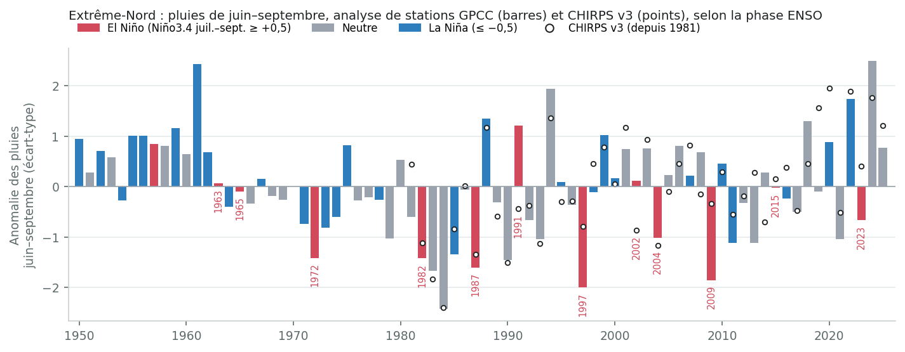
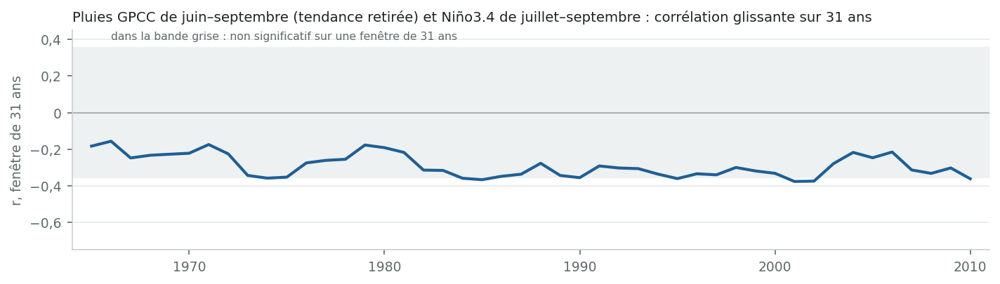
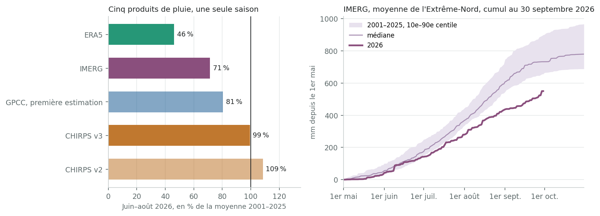
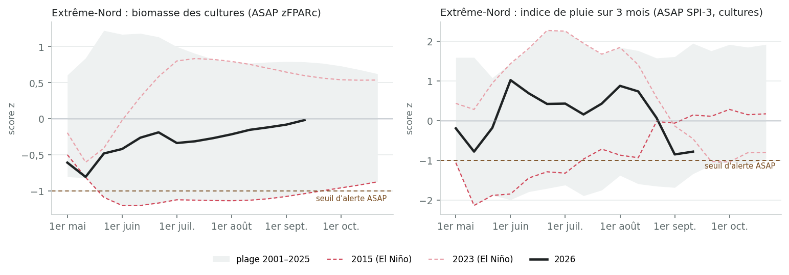
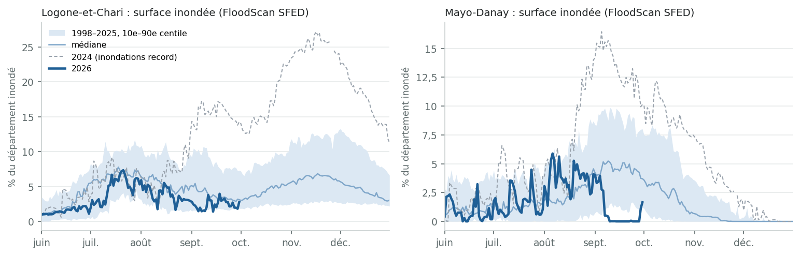
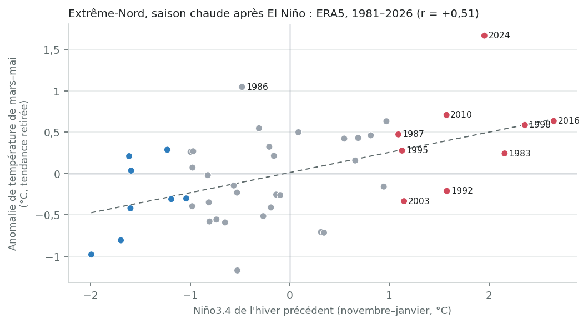
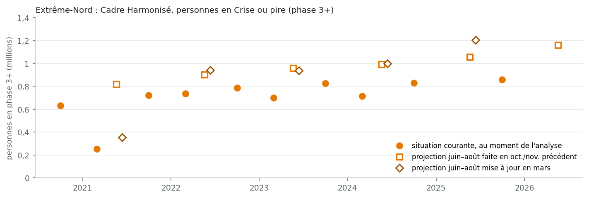

Téléconnexions · analyse ENSO
1. El Niño fait pencher la balance vers une saison des pluies sèche, sans la décider. Sur les neuf saisons El Niño depuis 1981, cinq à sept (selon le jeu de données) se sont classées dans le tiers le plus sec des cumuls de juin–septembre, et au plus une dans le tiers le plus humide. La probabilité d'une saison sèche passe ainsi d'environ une sur trois à environ deux sur trois. Dans les relevés de stations, la corrélation est d'environ −0,3 : El Niño explique environ un dixième de la variabilité d'une année à l'autre. Les épisodes forts ont différé : 1987 et 1997 ont été secs, 2015 proche de la normale dans les relevés de stations.
2. La saison 2026 a été tardive, inégale et plus sèche au nord. Les données divergent sur l'ampleur. Pour juin–août 2026, les cinq produits de pluie vont de 46 % à 109 % de leur moyenne 2001–2025. Pour IMERG, c'est la saison la plus sèche depuis 2001, et FEWS NET estime les pluies de juin–septembre inférieures de 20 à 50 % à la moyenne dans le Logone-et-Chari. CHIRPS place la région proche de la normale. La biomasse des cultures a pris du retard en juin et était revenue à la normale mi-septembre. Les produits satellitaires et la réanalyse montrent tous un mois de mai sec, et IMERG, le seul qui couvre déjà septembre, une fin de saison sèche. Aucune station de l'Extrême-Nord n'apparaît dans les archives internationales pour 2025 ou 2026 : seules les données des stations nationales permettront de trancher.
3. Les inondations ne suivent pas El Niño ici. Les plus grandes années d'inondation depuis 1998 (2024, 2010, 2022, 2019) étaient neutres ou La Niña. Au 30 septembre, 2026 présente la plus petite surface inondée de la série FloodScan. Mais 26 mm de pluie sont tombés sur la région le 29 septembre, et les hautes eaux du Logone arrivent normalement en octobre–novembre.
4. L'effet d'El Niño le plus net encore à venir est la chaleur. La température de mars–mai dans l'Extrême-Nord suit l'El Niño de l'hiver précédent (r = +0,51). Après l'El Niño 2023/24 est venue la saison mars–mai la plus chaude jamais enregistrée. L'El Niño actuel, qui approche de son pic, est plus fort : un mars–mai 2027 plus chaud que la normale est probable. C'est la saison chaude qui précède la soudure.
5. Pour les pluies de 2027, El Niño ne donne aucune indication. Par le passé, la saison qui suit un El Niño fort est allée de très sèche (1983) à très humide (2024, la plus humide du relevé de stations). Ce qui comptera, c'est l'état de l'ENSO en juillet–septembre 2027, qu'aucune prévision n'atteint encore. Les prévisions saisonnières pour ces mois ne deviennent utiles qu'à partir de l'édition de juin 2027.
El Niño et les pluies
Risque sec accru, modéré
5 à 7 des 9 saisons El Niño depuis 1981 dans le tiers le plus sec, au plus 1 dans le plus humide ; r ≈ −0,3 dans les relevés de stations.
La saison 2026
Tardive, inégale, nord plus sec
Juin–août de 46 % à 109 % de la normale selon le produit ; démarrage tardif, septembre sec et déficit au nord.
Inondations
Pas de lien avec l'ENSO
Les grandes années d'inondation étaient neutres ou La Niña. 2026 : plus petite surface inondée au 30 septembre depuis 1998 ; octobre–novembre reste à venir.
Mars–mai 2027
Probablement plus chaud
La température de la saison chaude suit l'El Niño de l'hiver précédent (r = +0,51) ; mars–mai 2024 a été le plus chaud jamais enregistré.
L'épisode. L'indice océanique Niño (ONI) officiel de la NOAA atteint +1,8 °C pour juin–août 2026. C'est la valeur la plus élevée pour cette période depuis le début des relevés en 1950, au-dessus de 1997 (+1,5) et de 2015 (+1,4). 2026 est donc un El Niño estival plus fort que tous les analogues présentés plus bas. Les perspectives de septembre de la NOAA donnent El Niño à 100 % jusqu'en janvier–mars 2027, avec un pic en octobre–décembre à une médiane de +2,67 °C sur son indice relatif. L'épisode s'affaiblit ensuite : El Niño à 82 % en mars–mai, puis état neutre le plus probable (55 %) en avril–juin 2027. La Niña reste à 3 % ou moins dans toutes les perspectives jusqu'en mai–juillet 2027. Les perspectives de l'IRI, sur l'indice traditionnel, gardent El Niño plus probable qu'improbable jusqu'en mai–juillet (61 %). Les deux s'accordent sur un point : aucune prévision ENSO publiée n'atteint la saison des pluies 2027.
Où en est le calendrier. L'Extrême-Nord reçoit ses pluies de mai à octobre, surtout en juillet–septembre, avec un pic en août. Les pluies de 2026, la période sur laquelle El Niño agit le plus directement, sont terminées. Restent :
Le nord du Cameroun appartient au régime de mousson du Sahel, où El Niño est associé à une mousson ouest-africaine plus faible et à moins de pluies en juillet–septembre. Ce lien est bien documenté pour le Sahel dans son ensemble. Il s'est renforcé après 1970 environ (Janicot et al. 1996 ; Losada et al. 2012) et reste modeste : l'ENSO explique environ un dixième de la variance des pluies au Sahel, moins que les températures de surface de l'Atlantique et de la Méditerranée (Diatta & Fink 2014). Le catalogue de l'enquête classe le Cameroun « modéré, El Niño plus sec, juin–septembre ». Cette section le vérifie pour le seul Extrême-Nord, dans cinq jeux de données.
Le résultat est cohérent d'un jeu de données à l'autre quant au sens de l'effet et à son poids sur les probabilités, mais pas quant à son intensité. Dans tous les jeux de données, les saisons El Niño se concentrent dans le tiers le plus sec et n'atteignent presque jamais le tiers le plus humide. Les corrélations sans tendance vont de −0,23 à −0,36, à l'exception d'ERA5 (−0,47).
ERA5 appelle une réserve. Il ne montre pas la remontée des pluies au Sahel depuis les années 1980 que montrent tous les jeux de données de stations et satellitaires : environ −1 mm par décennie, contre +30 à +38. Il donne aussi à 2026 un déficit que ni la végétation ni CHIRPS ne confirment (section 3). Le même défaut, un assèchement artificiel sur l'Afrique centrale, a été constaté dans ERA5 sur la République centrafricaine. La corrélation plus forte d'ERA5 est à lire comme une borne haute.

| Jeu de données | Années | r | r, tendance retirée | p | Saisons El Niño : tiers le plus sec / moyen / le plus humide | La Niña : plus sec / moyen / plus humide | Tendance, mm par décennie |
|---|---|---|---|---|---|---|---|
| GPCC | 1981–2025 | −0,28 | −0,30 | 0,05 | 6 / 2 / 1 sur 9 | 2 / 4 / 6 sur 12 | +30 |
| CHIRPS v3 | 1981–2025 | −0,30 | −0,34 | 0,02 | 6 / 3 / 0 sur 9 | 1 / 5 / 6 sur 12 | +37 |
| CHIRPS v2 | 1981–2025 | −0,21 | −0,23 | 0,14 | 5 / 3 / 1 sur 9 | 1 / 5 / 6 sur 12 | +38 |
| IMERG | 2001–2025 | −0,38 | −0,37 | 0,07 | 4 / 0 / 1 sur 5 | 1 / 2 / 3 sur 6 | +47 |
| ERA5 | 1981–2025 | −0,47 | −0,47 | 0,001 | 7 / 2 / 0 sur 9 | 1 / 4 / 7 sur 12 | −1 |
| GPCC, série longue | 1950–2025 | −0,28 | −0,26 | 0,02 | 7 / 4 / 2 sur 13 | 7 / 8 / 13 sur 28 | −3 |
Cumuls de juin–septembre sur la région comparés au Niño3.4 de juillet–septembre (simultané). Les tiers sont calculés sur la série sans tendance, pour que la remontée des pluies au Sahel depuis les années 1980 ne concentre pas les premières années dans le tiers le plus sec. El Niño et La Niña : Niño3.4 ≥ +0,5 et ≤ −0,5. p porte sur le r sans tendance. La ligne ERA5 en surbrillance est discutée dans le texte.
Sur 1950–2025, GPCC (seule analyse de stations assez longue) donne une corrélation sans tendance de −0,26 : 7 saisons El Niño sur 13 dans le tiers le plus sec et 2 dans le plus humide. La corrélation était plus faible sur 1950–1980 (−0,19, quatre saisons El Niño, non significative) que sur 1981–2025 (−0,30), comme le prévoit la littérature sur le Sahel.

Quatre saisons depuis 1950 ont eu un Niño3.4 de juillet–septembre de +1,3 °C ou plus. Sur l'ONI de juin–août du CPC, seul indice disponible pour 2026 à ce stade, aucune n'atteignait les +1,8 de 2026 (1997 : +1,5 ; 2015 : +1,4). 1987 et 1997 figurent parmi les saisons les plus sèches des relevés de stations. 2015 était proche de la médiane dans GPCC et CHIRPS (ERA5 : 22e centile). Pour 2023, les jeux de données divergent : IMERG la place dans son dixième le plus sec, CHIRPS au-dessus de la médiane.
| Saison | ONI juin–août | Niño3.4 juil.–sept. | GPCC | CHIRPS v3 | IMERG | ERA5 | Remarques |
|---|---|---|---|---|---|---|---|
| 1987 | +1,3 | +1,5 | 7 % | 9 % | — | 33 % | Un inventaire gouvernemental des sécheresses mentionne des pénuries alimentaires et d'eau dans le Logone-et-Chari, à Mora et à Maroua début 1987, avant les pluies de la saison ; nous n'avons trouvé aucun rapport sur la saison elle-même. |
| 1997 | +1,5 | +1,9 | 3 % | 22 % | — | 16 % | La plus sèche des quatre dans GPCC ; aucun rapport d'impact trouvé pour 1997. |
| 2015 | +1,4 | +1,9 | 51 % | 58 % | 40 % | 22 % | SMIAR (GIEWS) : production réduite dans l'Extrême-Nord en raison de pluies irrégulières et de l'insécurité. |
| 2023 | +1,0 | +1,3 | 24 % | 67 % | 8 % | 38 % | SMIAR (GIEWS) : pluies inférieures à la moyenne ayant affecté les rendements dans des zones localisées de l'Extrême-Nord. |
| 2026 | +1,8 | pas encore | voir la section 3 | ||||
Centile du cumul de juin–septembre dans chaque jeu de données (0 = le plus sec, 100 = le plus humide) : GPCC sur 1950–2025, les autres sur leurs propres années (CHIRPS et ERA5 depuis 1981, IMERG depuis 2001). Niño3.4 : NOAA PSL, ERSST v5. ONI : indice officiel du CPC sur trois mois (ERSST v5), donné pour comparer 2026 sur la même base ; la série mensuelle utilisée pour la colonne juillet–septembre s'arrête en juin 2026.
Tous les jeux de données de cette page s'appuient sur des stations, et ici les stations se sont raréfiées. Les mailles GPCC sur la région comptaient six à neuf stations par mois en saison des pluies des années 1950 aux années 1980, et environ cinq dans les années 1990. On est ensuite tombé à une ou deux jusqu'en 2004, puis à aucune pendant les mois de pluie (une seule station en 2020, qui n'a transmis qu'en saison sèche). Avant 1927, il n'y en avait aucune, et les valeurs GPCC de 1891–1903 ne sont que sa climatologie répétée.
La station synoptique de Maroua-Salak apparaît bien dans l'archive journalière de la NOAA (GSOD) la plupart des années jusqu'en 2024, mais de façon lacunaire : 360 jours en 2020, 129 en 2024. Rien n'apparaît pour 2025 ni 2026. Les données de stations utilisées en 2026 par GPCC et CHIRPS viennent donc du Tchad et du Nigeria, ce qui explique une partie des divergences. Cela signifie aussi que les relevés de la Direction de la météorologie nationale (DNM) et de l'ONACC valent davantage que toute nouvelle comparaison de produits satellitaires.
| années 1920 | années 1930 | années 1940 | années 1950 | années 1960 | années 1970 | années 1980 | années 1990 | années 2000 | années 2010 | années 2020 | |
|---|---|---|---|---|---|---|---|---|---|---|---|
| Stations par mois, juin–septembre | 0,3 | 1,4 | 2,0 | 6,1 | 7,4 | 8,2 | 9,2 | 5,3 | 0,5 | 0,0 | 0,0 |
GPCC Full Data v2022 (DWD) : nombre de stations dans les mailles de 1° qui couvrent la région, moyenné sur les mois de juin à septembre et sur chaque décennie (années 2020 : 2020 seulement, dernière année du produit).
Cinq produits, une seule saison, et un écart de 46 % à 109 % de la normale pour juin–août. Ce qu'ils ont en commun :
Ils divergent sur juillet et août. CHIRPS les place proches de la normale. IMERG les situe à 62–71 %, ce qui fait de juin–septembre sa saison la plus sèche depuis 2001 pour la région et pour trois des six départements (Logone-et-Chari, Mayo-Danay et Mayo-Kani). ERA5 est plus bas encore, à 46 %, mais sa série présente les problèmes décrits à la section 2.

| Produit | Nature | mai | juin | juil. | août | sept. | juin–août | Rang, plus sec = 1 |
|---|---|---|---|---|---|---|---|---|
| GPCC | Analyse de stations (produit combiné NOAA PSL) ; la série s'arrête en décembre 2025. | — | — | — | — | — | — | — |
| CHIRPS v3 | Infrarouge satellitaire combiné à des stations ; CHC, mensuel. | 78 % | 114 % | 96 % | 95 % | — | 99 % | 11 sur 26 |
| CHIRPS v2 | Version précédente de CHIRPS, toujours produite (IRI Data Library). | 75 % | 114 % | 104 % | 110 % | — | 109 % | 19 sur 26 |
| IMERG | Micro-ondes et infrarouge satellitaires, late run (sans ajustement aux stations) ; journalier. | 59 % | 90 % | 71 % | 62 % | 80 % | 71 % | 1 sur 26 |
| ERA5 | Réanalyse (aucune station pluviométrique assimilée) ; voir la réserve à la section 2. | 22 % | 39 % | 53 % | 44 % | — | 46 % | 1 sur 26 |
| GPCC, première estimation | Analyse de stations à partir des premiers relevés du mois (DWD). Stations dans les mailles de 1° qui recoupent la région (dont deux surtout au Tchad) : mai 1, juin 0, juil. 1, août 0. | 105 % | 66 % | 87 % | 81 % | — | 81 % | — |
| GPCC, produit de suivi | Produit de suivi ultérieur du GPCC, avec davantage de stations (DWD) ; jusqu'à juillet pour l'instant. Stations dans les mailles de 1° qui recoupent la région (dont deux surtout au Tchad) : mai 1, juin 7, juil. 1. | 91 % | 109 % | 90 % | — | — | — | — |
Chaque mois et chaque saison en part de la moyenne 2001–2025 du même produit (une seule période de référence pour tous, fixée par le début d'IMERG). Rang parmi 2001–2026. Tiret : pas encore publié.
CHIRPS v3 place tous les départements à ±6 % de la normale pour juin–août. IMERG place tous les départements sous la normale, de 63 % (Logone-et-Chari) à 81 % (Mayo-Sava). Le classement d'IMERG concorde avec l'évaluation de terrain de FEWS NET, qui distingue le Logone-et-Chari (voir plus bas).
| Département | CHIRPS v3, juin–août | IMERG, juin–août | IMERG, juin–sept. | Rang IMERG juin–sept., plus sec = 1 |
|---|---|---|---|---|
| Diamaré | 94 % | 79 % | 81 % | 4 sur 26 |
| Logone-et-Chari | 102 % | 63 % | 66 % | 1 sur 26 |
| Mayo-Danay | 102 % | 79 % | 79 % | 1 sur 26 |
| Mayo-Kani | 98 % | 67 % | 66 % | 1 sur 26 |
| Mayo-Sava | 102 % | 81 % | 84 % | 3 sur 26 |
| Mayo-Tsanaga | 99 % | 72 % | 77 % | 2 sur 26 |
La végétation est mesurée par satellite, indépendamment de tout produit de pluie. Sur les cultures, la biomasse dans l'Extrême-Nord est restée sous la normale de mai à août, au plus bas mi-mai (score z −0,8) et en juillet (environ −0,3). Elle n'a jamais atteint le seuil d'alerte de l'ASAP et était revenue à la médiane mi-septembre (−0,02, 13e sur 26 saisons). Ce n'est pas le profil de 2015, quand la biomasse des cultures est restée sous le seuil de juin à septembre.
Sur 2001–2025, la biomasse de fin de saison n'est que faiblement liée à El Niño (r = −0,21, non significatif). Trois des cinq années El Niño étaient sous la normale (2002, 2009, 2015) et deux au-dessus (2004, 2023). L'indice de pluie sur 3 mois de l'ASAP, alimenté par une estimation de type CHIRPS, est resté positif jusqu'en août puis est devenu négatif en septembre.

Au total : une saison tardive et sous la normale par endroits, avec un déficit concentré au nord, mais pas un échec généralisé. Les évaluations de récolte du ministère de l'Agriculture (MINADER) et le cycle du Cadre Harmonisé d'octobre–novembre 2026 diront ce qu'elle a produit.
Les inondations sont l'aléa qui a déclenché les grandes réponses humanitaires dans la région. En 2024, OCHA comptait début octobre 198 000 personnes touchées dans le Mayo-Danay et 156 000 dans le Logone-et-Chari, et la FICR plus de 500 000 dans toute la région. Dans la série FloodScan depuis 1998, la saison des crues 2026 est faible jusqu'ici. La part inondée du Logone-et-Chari est restée sous sa médiane presque tous les jours depuis août. Pour la région dans son ensemble, le pic au 30 septembre est le plus bas en 29 ans.
Ce n'est pas fini. Le 29 septembre, IMERG estimait 26 mm sur la région (31 à 35 mm dans le Diamaré, le Mayo-Danay et le Logone-et-Chari), la deuxième journée la plus pluvieuse de 2026, et la surface inondée a bondi le lendemain. Le bulletin décadaire de l'ONACC pour le 1er–10 octobre désigne les inondations comme le principal risque national. Les hautes eaux du Logone-et-Chari arrivent normalement en octobre–novembre.

| Unité | Pic de surface inondée au 30 sept. 2026 | Médiane des années passées à la même date | Rang 2026 (1 = le plus inondé) | Plus grands pics sur la saison entière, 1998–2025 |
|---|---|---|---|---|
| Extrême-Nord | 3,1 % | 4,8 % | 29 sur 29 | 2024 (10 %), 2010 (8 %), 2022 (7 %), 2019 (7 %) |
| Diamaré | 4,5 % | 3,7 % | 10 sur 29 | 2018 (9 %), 2001 (9 %), 2016 (7 %), 2024 (7 %) |
| Logone-et-Chari | 7,3 % | 11,3 % | 28 sur 29 | 2024 (27 %), 2010 (22 %), 2022 (19 %), 2019 (18 %) |
| Mayo-Danay | 5,9 % | 8,4 % | 25 sur 29 | 2024 (16 %), 2012 (15 %), 2025 (13 %), 2001 (12 %) |
| Mayo-Kani | 3,3 % | 2,9 % | 12 sur 29 | 2018 (14 %), 2016 (11 %), 2024 (7 %), 2015 (6 %) |
Les années d'inondation ne suivent pas l'ENSO ici. Sur 1998–2025, la corrélation entre le pic de surface inondée de la région et le Niño3.4 de juillet–septembre est de −0,17 (p = 0,38, n = 28). Les cinq plus grandes années d'inondation sont 2024 (neutre), 2010 (La Niña), 2022 (La Niña), 2019 (neutre), 2002 (El Niño). 2024, la plus importante, était neutre. Les crues du Logone dépendent des pluies sur tout son bassin, au Cameroun, au Tchad et en République centrafricaine, et des orages locaux, pas seulement du cumul de la saison sur place.
Une crue faible a aussi un coût. Les plaines inondables du Logone (les yaérés) portent les pâturages de saison sèche, la pêche et les cultures de décrue. Lors de la grande sécheresse de 1972–73, les débits étaient trop faibles pour inonder la plaine tchadienne (Suchel 1983). AGRHYMET signale des débits du Logone et du Chari en août 2026 nettement inférieurs à ceux de l'an dernier, et le PREGEC des niveaux plus bas dans le bassin du lac Tchad. Que cela pèse cette année dépendra d'octobre–novembre, et d'évaluations que nous n'avons pas vues.
C'est sur la température que l'effet d'El Niño sur l'Extrême-Nord est le plus net. L'atmosphère tropicale se réchauffe pendant plusieurs mois après le pic d'un El Niño, et la saison chaude de la région (mars–mai, températures moyennes supérieures à 31 °C) tombe dans cette fenêtre. Une fois la tendance au réchauffement retirée (+0,38 °C par décennie), la température de mars–mai est corrélée au Niño3.4 de novembre–janvier précédent avec r = +0,51 (p < 0,001, 46 ans, ERA5). Les températures d'ERA5 n'ont pas les défauts de ses pluies : elles assimilent des observations de surface et sont généralement fiables à cette échelle.
Après chacun des trois derniers El Niño forts, mars–mai s'est classé parmi les quatre plus chauds des 46 années (tendance retirée) :
Après 1997/98, il était le 6e plus chaud. Deux des neuf épisodes du tableau ont été suivis d'une saison chaude plus fraîche que la tendance : 1992, après l'éruption du Pinatubo, et 2003.

| Hiver El Niño | Niño3.4 nov.–janv. | Mars–mai suivant : anomalie, tendance retirée | Rang, plus chaud = 1 |
|---|---|---|---|
| 1982/83 | +2,2 | +0,24 °C | 18 sur 46 |
| 1986/87 | +1,1 | +0,47 °C | 9 sur 46 |
| 1991/92 | +1,6 | −0,21 °C | 27 sur 46 |
| 1994/95 | +1,1 | +0,28 °C | 15 sur 46 |
| 1997/98 | +2,4 | +0,59 °C | 6 sur 46 |
| 2002/03 | +1,1 | −0,34 °C | 33 sur 46 |
| 2009/10 | +1,6 | +0,71 °C | 3 sur 46 |
| 2015/16 | +2,6 | +0,63 °C | 4 sur 46 |
| 2023/24 | +2,0 | +1,67 °C | 1 sur 46 |
L'El Niño actuel, qui approche de son pic, est plus fort que celui de 2023/24 : un mars–mai 2027 plus chaud que la normale est donc l'issue la plus probable. Il surviendrait en fin de saison sèche, quand l'eau est la plus rare et que la soudure commence. 2026 a déjà été chaud : juillet et août ont dépassé de 1,3 à 1,5 °C leurs moyennes 1991–2020. Les prévisions saisonnières couvriront mars–mai 2027 à partir de leurs éditions de novembre–décembre.
L'insécurité alimentaire dans l'Extrême-Nord est élevée et en hausse, et son principal moteur est le conflit dans le bassin du lac Tchad, pas le climat. Le nombre de personnes en phase 3 ou pire au moment des récoltes (octobre–décembre) est passé de 0,72 million en 2021 à 0,86 million en 2025. Les analyses d'octobre/novembre ont projeté chaque soudure suivante à un niveau plus élevé : 0,90 million (2022), 0,96 million (2023), 0,99 million (2024), 1,06 million (2025) et 1,16 million (2026). Cette dernière projection, d'octobre 2025, est l'analyse la plus récente dans les données HDX/HAPI : 1,16 million de personnes (23 %) en phase 3+ pour juin–août 2026, dont 170 000 en phase 4. Nous n'avons trouvé aucune mise à jour de mars 2026.
La récolte 2026 n'apparaît donc encore dans aucun chiffre du Cadre Harmonisé. Le cycle d'octobre–novembre 2026 sera le premier à en tenir compte, et sa projection pour juin–août 2027 est celle qui compte ici. La série est trop courte (depuis 2020) pour montrer à elle seule un effet d'El Niño sur le Cadre Harmonisé. En 2015, le SMIAR (GIEWS) attribuait la baisse de production dans l'Extrême-Nord à des « pluies irrégulières et à l'insécurité civile ». En 2023, il signalait des pluies inférieures à la moyenne ayant affecté les rendements « dans des zones localisées ».

| Département | Phase 3+, situation courante (oct.–déc. 2025) | Phase 3+, projection juin–août 2026 | dont phase 4 | Part en phase 3+ |
|---|---|---|---|---|
| Diamaré | 101 525 | 121 830 | 0 | 12 % |
| Logone-et-Chari | 107 780 | 192 464 | 30 794 | 25 % |
| Mayo-Danay | 129 801 | 199 028 | 34 614 | 23 % |
| Mayo-Kani | 92 658 | 138 987 | 13 237 | 21 % |
| Mayo-Sava | 154 075 | 176 901 | 34 239 | 31 % |
| Mayo-Tsanaga | 274 771 | 332 015 | 57 244 | 29 % |
Analyse du Cadre Harmonisé d'octobre 2025, la plus récente dans les données HDX/HAPI pour le Cameroun.
Ce qu'El Niño ajoute, c'est un choc sur la récolte dans les départements déjà les plus touchés. L'évaluation de FEWS NET de septembre 2026 prévoit une récolte inférieure à la moyenne et classe le Logone-et-Chari, le Mayo-Sava et le Mayo-Tsanaga en Crise. Ce sont les trois départements où la part projetée en phase 3+ est la plus élevée dans le tableau ci-dessus. Dans le Cameroun soudano-sahélien, les pluies pèsent sur les rendements surtout par la fin de saison et les séquences sèches (Nenwala et al. 2025), et le mois de septembre sec qu'indique IMERG est précisément ce type de signal.
La saison qui suit un El Niño fort n'a pas de caractère constant ici. Le tableau ci-dessous liste toutes les saisons depuis 1950 qui ont suivi un hiver où le Niño3.4 atteignait +1,0 °C ou plus. Certaines ont été très sèches : 1983, au cœur de la sécheresse sahélienne, et 1987, quand El Niño a persisté une deuxième année. D'autres ont été humides, jusqu'à 2024 : la saison la plus humide dans GPCC et la troisième dans CHIRPS et ERA5, suivie des inondations record. Ce qui comptera, c'est l'état de l'ENSO pendant la saison 2027 elle-même, ainsi que les températures de surface de l'Atlantique et de la Méditerranée, que la littérature juge tout aussi importantes.
Les perspectives actuelles indiquent un El Niño en déclin d'ici mi-2027 et une probabilité presque nulle de La Niña d'ici mai–juillet. L'état de juillet–septembre 2027 reste donc ouvert. Si El Niño persistait, les probabilités pencheraient de nouveau vers le sec, comme en 1987. Si le Pacifique se refroidissait, elles pencheraient vers l'humide et les inondations.
| Hiver El Niño | Niño3.4 nov.–janv. | Niño3.4 juil.–sept., année suivante | Pluies de juin–septembre suivantes : GPCC | CHIRPS v3 | ERA5 |
|---|---|---|---|---|---|
| 1957/58 | +1,3 | −0,1 | 79 % | — | — |
| 1965/66 | +1,3 | −0,3 | 33 % | — | — |
| 1972/73 | +1,9 | −1,6 | 21 % | — | — |
| 1982/83 | +2,2 | −0,3 | 5 % | 4 % | 20 % |
| 1986/87 | +1,1 | +1,5 | 7 % | 9 % | 33 % |
| 1991/92 | +1,6 | +0,1 | 25 % | 38 % | 49 % |
| 1994/95 | +1,1 | −0,6 | 55 % | 42 % | 53 % |
| 1997/98 | +2,4 | −1,2 | 46 % | 73 % | 89 % |
| 2002/03 | +1,1 | +0,2 | 76 % | 82 % | 58 % |
| 2009/10 | +1,6 | −1,4 | 66 % | 62 % | 78 % |
| 2015/16 | +2,6 | −0,5 | 42 % | 64 % | 40 % |
| 2023/24 | +2,0 | −0,1 | 100 % | 96 % | 96 % |
Centile de la saison juin–septembre suivante (0 = la plus sèche) : GPCC sur 1950–2025, CHIRPS v3 et ERA5 sur 1981–2025. Sur toutes les années depuis 1982, la corrélation entre le Niño3.4 d'un hiver et la saison des pluies suivante (tendance retirée) est de +0,13 dans GPCC, +0,19 dans CHIRPS v3 et +0,14 dans ERA5, aucune n'étant significative.
Les prévisions SEAS5 du CEPMMT pour les pluies de juillet–septembre sur l'Extrême-Nord ont une faible compétence jusqu'à l'édition de juin. Une prévision émise en avril ou en mai, quand se prennent les décisions de semis, est un guide peu fiable. Le forum régional PRESASS (avril–mai) et les mises à jour de juin–juillet sont les premiers signaux utiles pour 2027.
| SEAS5 émis en | mars | avril | mai | juin | juillet |
|---|---|---|---|---|---|
| r médian, juillet–septembre, mailles de l'Extrême-Nord | faible+0,29 | faible+0,18 | faible+0,17 | modérée+0,43 | modérée+0,44 |
D'après le cube de compétence SEAS5 de l'équipe (moyenne d'ensemble comparée à ERA5, 1981–2025, tendance retirée) : faible < 0,30, modérée 0,30–0,50. La référence est ERA5, dont les faiblesses sur cette région sont discutées à la section 2.
| Quand | Quoi | Pourquoi c'est important ici |
|---|---|---|
| 8 octobre, 12 novembre, 10 décembre 2026 | Perspectives ENSO du CPC (NOAA) | Intensité du pic et calendrier du déclin ; les premières perspectives atteignant juin–août 2027 paraîtront début 2027. |
| Octobre–novembre 2026 | Hautes eaux du Logone ; bulletins décadaires de l'ONACC | Le pic de crue du Logone-et-Chari tombe généralement à cette période ; les pluies de fin septembre ont relancé les inondations. |
| Octobre–novembre 2026 | Cycle national du Cadre Harmonisé ; résultats de récolte du MINADER ; validation PREGEC (fin novembre) | Les premiers chiffres de sécurité alimentaire à intégrer la récolte 2026, et la première projection pour la soudure de juin–août 2027. |
| Novembre–décembre 2026 | Prévisions saisonnières (C3S, SEAS5) couvrant mars–mai 2027 | Perspective de température pour la saison chaude, où le signal El Niño est le plus fort. |
| Mars 2027 | Mise à jour du Cadre Harmonisé | Révise la projection de soudure à la lumière de la saison sèche. |
| Avril–mai 2027 | PRESASS 2027 (forum régional de prévision saisonnière) | Première prévision consensuelle pour les pluies de 2027 ; compétence encore faible à cette échéance. |
| Juin–juillet 2027 | Éditions de juin et juillet de SEAS5 ; état de l'ENSO en été | Premières prévisions avec une compétence modérée pour juillet–septembre sur l'Extrême-Nord. |
Région. L'Extrême-Nord selon le polygone COD-AB de niveau 1 (CM004) ; départements selon le COD-AB de niveau 2.
Pluies.
Saison et périodes de référence. Le cumul de la saison des pluies porte sur juin–septembre. La relation avec l'ENSO porte sur 1981–2025 (IMERG 2001–2025), tendance retirée avant le calcul des tiers. Les comparaisons 2026 utilisent une même période de référence pour tous les produits, 2001–2025, fixée par le début d'IMERG.
ENSO. Niño3.4 de la NOAA PSL, base ERSST v5 : la série figée de l'enquête, qui s'arrête en juin 2026. El Niño : ≥ +0,5 °C ; La Niña : ≤ −0,5 °C, en moyenne sur juillet–septembre. Pour 2026, l'ONI officiel du CPC. Les chiffres de prévision proviennent du CPC de la NOAA (discussion de septembre 2026 et perspectives de l'indice relatif) et de l'IRI (septembre 2026).
Végétation. Indicateurs décadaires du JRC ASAP par région (zFPARc et SPI-3 sur les cultures), comme dans ds-asap-trends.
Inondations. AER FloodScan SFED, part journalière de chaque unité détectée comme inondée, 1998–2026, tirée de la base de données de l'équipe. FloodScan ne détecte que les étendues d'eau assez grandes.
Température. Température mensuelle moyenne à 2 m d'ERA5 (CDS), moyenne des mailles de 0,25° qui touchent la région.
Sécurité alimentaire. Résultats du Cadre Harmonisé via HDX/HAPI (copie IPC de l'équipe).
Compétence des prévisions. Compétence de SEAS5 d'après le cube seas5-skill de l'équipe : moyenne d'ensemble comparée à ERA5, 1981–2025, tendance retirée.
Rapports externes (FEWS NET, PREGEC, AGRHYMET, notes ASAP, SMIAR, ONACC, NOAA, IRI) cités tels que publiés ; nous n'avons pas vu les données du MINADER ni de la DNM.
Traduction. Cette page est la version française de la page anglaise, produite à partir des mêmes calculs. Les citations de sources anglophones (FEWS NET, SMIAR, notes ASAP) sont traduites par nos soins ; les titres des références sont laissés dans leur langue d'origine.
Produit par extreme_nord_deep_dive.py à partir de deep_dives/i18n/extreme-nord.fr.toml. Série Niño3.4 identique à celle de l'enquête mondiale (en anglais).